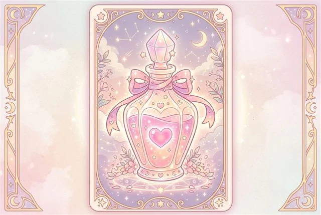

MBTI 16가지 성격 유형별 연애 궁합표: 인지기능 기반 환상의 케미와 갈등 관리 가이드
단순한 이니셜 조합을 넘어 융(Carl Jung)의 심리 유형론과 8가지 인지기능(Cognitive Functions) 모델을 바탕으로 16가지 성격 유형 간의 연애 시너지와 갈등 패턴을 심층 분석합니다.

연애를 시작할 때 상대방과 자연스럽게 말이 통하고 깊은 정서적 교감이 일어나는 순간이 있는가 하면, 아무리 노력해도 사소한 표현 하나로 오해가 쌓이고 피로해지는 관계가 있습니다. 성격 심리학에서는 이를 단순한 '우연'이 아니라 각 개인이 세상을 인식하고 판단하는 심리적 기제(Cognitive Mechanism)의 상호작용으로 설명합니다.
MBTI(Myers-Briggs Type Indicator)는 외향(E)/내향(I), 감각(S)/직관(N), 사고(T)/감정(F), 판단(J)/인식(P)의 4가지 축을 통해 16가지 고유한 성격 유형을 정의합니다. 본 연구 보고서에서는 단순 흥미성 궁합을 넘어, 주기능(Dominant)과 부기능(Auxiliary)의 심리적 결합을 토대로 최상의 시너지를 내는 조합과 주의가 필요한 갈등 해결 프로토콜을 제시합니다.
1. 16가지 MBTI 연애 궁합 종합 매트릭스
심리학적 궁합의 핵심은 "인식 방식(S/N)이 유사하여 대화의 코드가 맞고, 판단 방식(T/F)이 상호 보완되어 서로의 사각지대를 메워주는가"에 있습니다. 아래 표는 16가지 유형의 대표적인 연애 역동을 체계화한 결과입니다.
| 유형 그룹 | 대표 조합 | 관계 특성 & 시너지 | 주요 주의사항 |
|---|---|---|---|
| 분석형 (NT) INTJ, INTP, ENTJ, ENTP |
INTJ & ENFP INTP & ENFJ |
지적 탐구와 영감의 완벽한 상호보완. 통찰력 있는 내면과 활력 넘치는 감정의 조화. | 감정 표현의 직설성 완화 및 상대의 감정적 인정 요구 수용 필요. |
| 외교형 (NF) INFJ, INFP, ENFJ, ENFP |
INFJ & ENTP INFP & ENTJ |
깊은 정서적 공감과 철학적 가치관 공유. 영혼의 동반자적 유대감 형성. | 비판을 개인적 공격으로 받아들이지 않는 정서적 분리 연습 필요. |
| 관리자형 (SJ) ISTJ, ISFJ, ESTJ, ESFJ |
ISFJ & ESFP ISTJ & ESTP |
신뢰, 헌신, 일상의 안정감. 현실적인 책임감과 생동감 있는 즐거움의 결합. | 변화에 대한 유연성 확보 및 계획에 대한 지나친 통제 욕구 조율. |
| 탐험가형 (SP) ISTP, ISFP, ESTP, ESFP |
ISTP & ESTJ ISFP & ESFJ |
현재의 감각적 즐거움과 즉흥적인 모험 공유. 부담 없는 솔직한 관계. | 장기적인 미래 계획 및 감정적 진지함에 대한 회피 성향 경계. |
2. 4대 기질별 심층 연애 역동 분석
(1) 분석가형(NT)과 이상주의자(NF)의 '마법 같은 보완'
내향 직관(Ni)이나 외향 직관(Ne)을 핵심으로 사용하는 직관(N) 계열의 만남은 대화의 깊이가 무한대에 달합니다. 사고형(T)은 감정형(F)의 풍부한 따뜻함에서 정서적 안식처를 얻고, 감정형(F)은 사고형(T)의 냉철한 현실 분석에서 불안을 가라앉히는 든든함을 경험합니다.
핵심 소통 팁: NT 유형은 갈등 상황에서 "그게 왜 논리적으로 맞지 않는지"를 따지기 전에, 먼저 "네가 속상했겠구나"라는 감정적 공감을 최소 1문장 선행해야 합니다.
(2) 관리자형(SJ)과 탐험가형(SP)의 '현실적 밸런스'
감각(S)을 기반으로 세상을 바라보는 이들은 일상적인 데이트, 맛집 탐방, 안정적인 경제적 기반 형성 등 현실 감각에서 최고의 합을 보입니다. 보수적이고 규칙적인 SJ의 일상에 자유롭고 생기 넘치는 SP가 활력을 불어넣으며, 반대로 SP의 무질서함을 SJ의 꼼꼼함이 보완해 줍니다.
3. 인지기능(Cognitive Functions)으로 보는 갈등 예방법
관계 파탄의 원인은 성격 차이 자체가 아니라, 상대방의 '열등기능(Inferior Function)'을 자극하는 행동에 있습니다.
- 외향 감정(Fe) 사용자 (FJ 유형): "우리 관계의 분위기"와 상대의 기분을 최우선으로 둡니다. 이들에게 무반응이나 차가운 침묵은 치명적인 거절감으로 작용합니다.
- 내향 사고(Ti) 사용자 (TP 유형): 자율성과 논리적 일관성이 핵심입니다. 억지스러운 규칙 강요나 감정적인 비난을 가하면 마음의 문을 완전히 닫아버립니다.
- 외향 사고(Te) 사용자 (TJ 유형): 효율과 명확한 해결책을 중시합니다. 모호하고 두루뭉술한 회피 태도를 가장 답답해하므로, 솔직한 요구사항을 명문화해 전달하는 것이 효과적입니다.
- 내향 감정(Fi) 사용자 (FP 유형): 자신의 고유한 가치관과 감정의 진정성을 보호받아야 합니다. 이들의 가치관을 함부로 평가하거나 교정하려 들면 강한 방어기제가 발동합니다.
4. 지속 가능한 연애를 위한 3단계 솔루션
아무리 환상의 궁합표에 위치한 커플이라도 건강한 대화 습관이 없으면 오래가지 못합니다. 연구팀이 권장하는 3단계 소통 원칙은 다음과 같습니다.
- 상대의 기본 속도 존중: 외향형(E)은 말하면서 생각을 정리하고, 내향형(I)은 생각을 정리한 뒤에 말합니다. 내향인에게 침묵할 3분의 여유를 주는 것만으로 갈등의 70%가 예방됩니다.
- 비난 대신 나의 상태 전달(I-Message): "너는 왜 항상 그래?"라는 비난 대신 "네가 연락이 늦어질 때 나는 불안함을 느껴"라고 표현하십시오.
- 차이를 결함으로 치부하지 않기: 나와 다른 상대의 특성은 나를 힘들게 하기 위해 존재하는 것이 아니라, 나와 다른 시야를 가졌음을 증명하는 선물입니다.
자주 묻는 질문 (FAQ)
Q. MBTI 궁합이 최악이라고 나오면 헤어져야 하나요?
절대 그렇지 않습니다. 궁합표에서의 '주의' 표시는 두 사람의 기본 정보 처리 방식이 정반대임을 의미할 뿐입니다. 반대 성향의 커플은 초반 갈등을 성숙하게 넘기면 서로의 사각지대를 가장 완벽하게 채워주는 평생의 인생 파트너가 됩니다.
Q. 연애 중에 MBTI 유형이 바뀔 수도 있나요?
성격의 핵심 기질은 안정적이지만, 상대방과의 상호작용 속에서 부기능이나 3차 기능이 발달하며 선호도 점수가 이동할 수 있습니다. 성숙한 사랑을 할수록 상대방의 유형적 장점을 흡수하여 균형 잡힌 인격으로 성장하게 됩니다.
Q. 가장 연애 지속 기간이 긴 MBTI 조합은 무엇인가요?
통계적으로 직관/감각(S/N) 지표가 일치하고 판단/인식(J/P)에서 상호 보완적인 커플이 높은 장기적 만족도를 보입니다. 하지만 유형 자체보다 '정서적 성숙도(안정 애착)'가 관계 지속의 가장 결정적인 변수입니다.
우리 둘의 MBTI 연애 유형과 궁합이 궁금하다면?
20가지 심리 상황 문항으로 알아보는 나의 연애 캐릭터와 환상의 짝꿍 분석